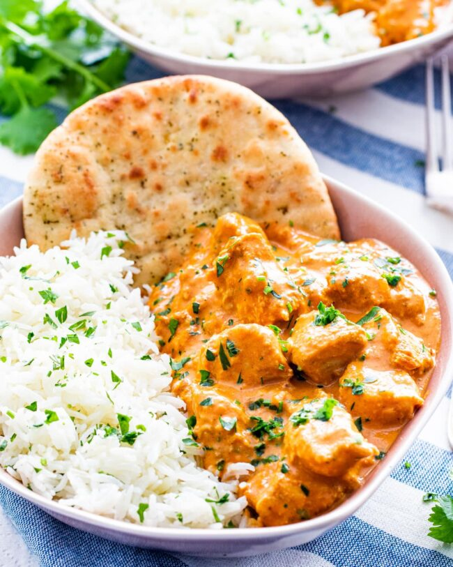

Butter Chicken

Description
This Butter Chicken stands up against any
takeout dish you can find.Combining ethnic
spices and simple ingredients to create one
delicious and aromatic meal.
Ingredients to marinade
- 750 gms chicken
- 1/2 cup plain yogurt
- 1 1/2 tbsp minced garlic
- 1 tbsp minced ginger
- 2 tsp garam masala
- 1 tsp cumin
- 1 tsp turmeric
- 1 tsp red chilli powder
- 1 tsp salt
Ingredients for gravy
- 1 onion
- 1 1/2 tbsp garlic
- 1 tbsp ginger
- 1 1/2 tsp cumin
- 1 1/2 tsp garam masala
- crushed tomatoes
- 1 tsp red chilli powder
- 1 1/4 tsp salt
- 1 cup heavy cream
- 1/2 tsp dried fenugreek leaves
Steps:
- Heat 2 tbsp of oil in a pan over a medium low heat.
Add chicken and cook for 30 mins on low flame.
- Take another pan and heat the oil for 2 mins. When hot
add onions, ginger and garlic to cook.
-
When the onions are caremelised, add tomatoes and cook it
until it starts to simmer.
-
When the tomatoes are cooked and thicked, add spices and
cook it on med to low heat. Also, add water as needed and
let it thicken.
-
Add the cooked chicken and cream to the pan for about 10 mins.
Lastly, add the dried fenugreek leaves for some aroma.